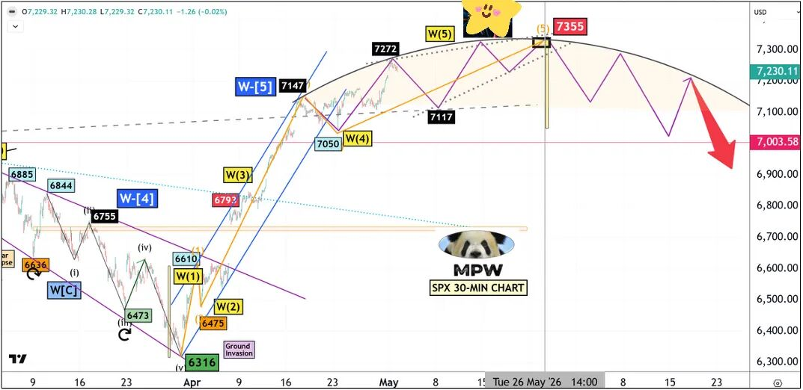
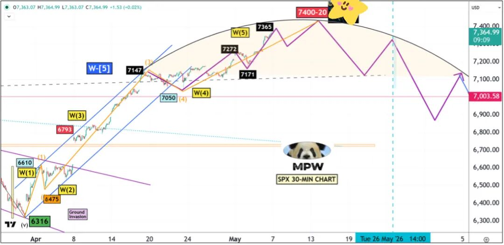
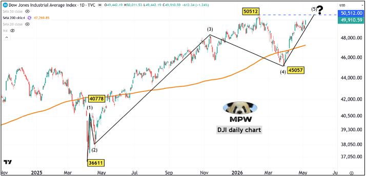
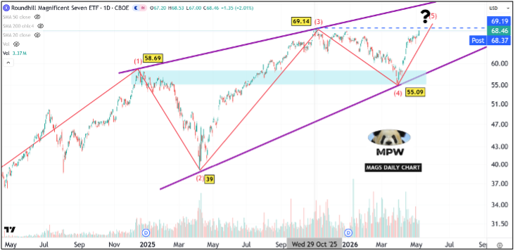
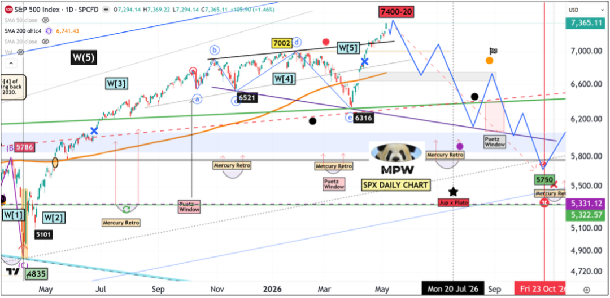
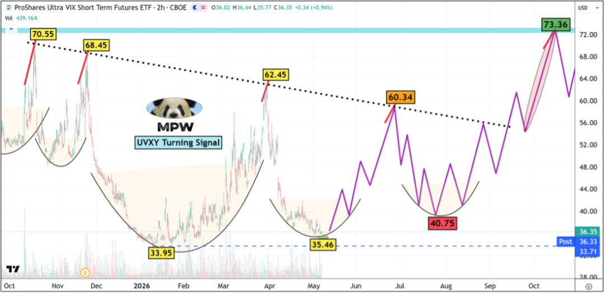

5 月 2 日发布的标普 30 分钟图原版路径——彼时浪 [5] 顶点锚定 7355，箭头指向回落 7000 关口。
以下是更新后的标普 30 分钟图：

最新版 30 分钟图——目标位上调至 7400—7420，浪 (5) 路径完整定型，5 月中旬见顶后回踩 7000 一线。
兽群轮换
（1）行至此处，但凡老练的交易员都已心知肚明：市场正处于一段抛物线式上行之中，结局注定不会优雅。
（2）过去几周我们所目睹的种种"史无前例"，其实只在抹掉前两次泡沫记忆之后才成立——20 年前，也就是上一代人记忆中的 1999—2000 与 2006—07，剧本何其相似。
（3）真正的问题是：何时见顶？顶在何处？我不得不再度抬高屋顶，把目标往上加盖一层，至 7400—7420 区间。我此前 7350 的目标位已被轻松拿下——而催化剂，是某场战争各方间第八次签署的"和平协议"。
发生了什么？
在 5 月 2 日发布的研究报告中，我曾写道：
— 这一波短而浅的 100 点回撤，足以充当替代版的 w-4 浪结构，市场已经按捺不住要奔向 w-5。
— 是的，我又一次不得不上调球门——从我坚守已久的 7150，到 7250，再到 7350。7350 是我的最后一道防线：一旦突破，整个自疫情底部以来的终结型楔形（ending diagonal）结构就将被证伪。
— 那么，如果这真的是一个大型终结楔形——与 NYA 和道指同构——那么 W-5 必须是各浪中最小的一段；换言之，它必须小于 2626 点。于是 4835 + 2626 = 7461。我留出 100 点以上的安全垫，所以 7350 应当就是天花板。
上述论断看起来彼此矛盾——我过去一年提出的终结楔形究竟是不是已被证伪？
此处澄清：只要 7461 不被本轮上行腿击穿，终结楔形仍是标普最优的浪型计数。
即便 7461 被击穿，标普也可被改记为一个标准的五浪结构，其中 W-1 视为一段准延伸浪【在对数图上你看不出差别；但在等差坐标下，从 2192 到 4818 的第一浪极其庞大，涨幅超过 100%】。
眼下我盯着两张图：
$MAGS（七巨头 ETF）
道琼斯工业指数。
简而言之——只要二者尚未双双刷新历史新高，本轮市场的"动物精神"就尚未耗尽。
截至今日收盘，两者距离 ATH 各还差 0.5%—1%。我给它们几个交易日，去完成这最后的攀登。

道琼斯日线浪型——五浪结构清晰，浪 (5) 距离 50512 历史高点仅一步之遥，问号标注顶部尚待确认。

七巨头 ETF（$MAGS）日线——浪 (5) 直逼 69.14 前高，与道指共振，是判定"动物精神是否耗尽"的关键双重信号。
接下来如何走？
长期浪型不变：终极高点指向 5 月中旬、7420 一线附近。仍有数项关键因子与"重大顶部"信号尚不兼容，至少还需要 1—2 周才能成型。
鉴于本轮抛物线之猛烈，我把下方目标位下调至 5750 区域，以为参考。同时，要精准抓到顶部几乎是不可能的——所以从今日起，我开始按每日 10% 的节奏，分批动用我的长线账户，建立三档头寸：[1] 7/17 到期、SPY 行权价 700 的看跌期权；[2] 10/30 到期、SPY 行权价 700 的看跌期权；[3] UVXY 正股。这是一笔长线布局，预计在 5 月 20 日前完成满仓。
为什么是 $UVXY？我对这只 ETF 心存许多不愉快的记忆——它跟踪的是
V I X 的 1.5 倍。但如果要捕捉一段动荡市场中最肥美的那一段，这便是最佳载体。举个最近的例子：即便今天标普涨幅超过 1

标普日线大局观——W(5) 已进入末段，路径预示见顶后向 5750 一线回落，叠加 Puetz Window 与 Mercury Retro 时间窗共振。

UVXY 两小时图——杯形底部 35.46 蓄势完成，紫色路径预示从 40.75 起跳，目标 73.36，呼应文中 UVXY 建仓逻辑。
免责声明：《波段市场研究报告》仅供具备独立决策能力的专业投资者进行学术与市场交流。文中所有推演与数据绝不构成任何买卖建议或“交易信号”。受监管限制，我们不提供具体操作推荐。初级投资者切勿在此寻找短期交易捷径，所有投资必须基于独立判断，风险自担。
译者注（华尔街术语对照速查）
- 抛物线式上行（parabolic move）：保留华尔街通用比喻
- 终结型楔形 / 终结楔形（ending diagonal）：艾略特浪理论术语，特指趋势末端楔形结构
- 替代版 w-4 浪（alternate w-4）：浪型计数中的备选方案
- 准延伸浪（quasi-extension）：非典型延伸浪
- 动物精神（animal spirit）：凯恩斯经济学术语，华尔街沿用
- Puetz Window / Mercury Retro / Jup × Pluto：时间窗口体系专用名词，按行业惯例保留英文原文